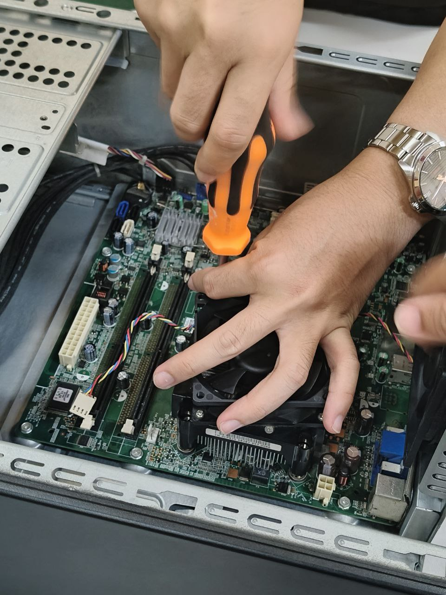
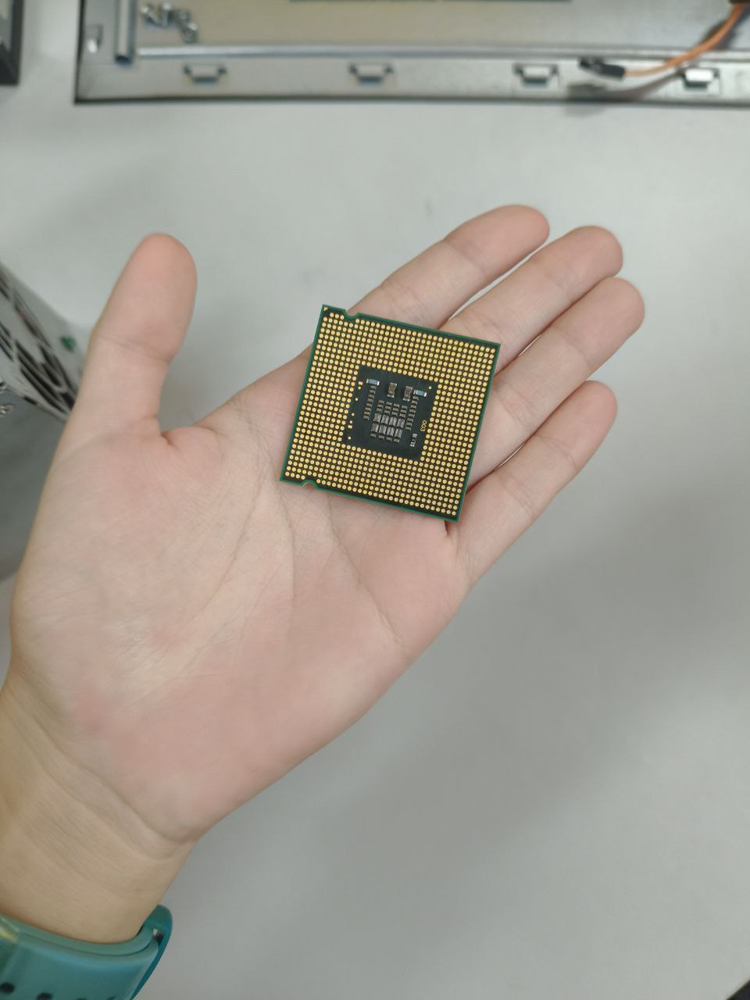

This was a very simple yet resourceful class. We learned how to handle when disassembling and assembling pc components. From opening the case, to removing the CPU. One thing I wanted them to put their finger on is to mention when handling with the CPU chip, to keep in mind to not touch the little pins on the bottom. Which is the most dangerous part when handling with such components, because one bended pin can mean a dead CPU, unless you can bend it back, which is very risky, better to avoid it rather than risk a damaged expensive brain of the PC.
Other than that, everything else is normal and perfect, slotting in the RAM making sure to line up the slot, and not slotting it in the wrong way around. Removing the fans was the hardest part. Other than that, everything else was easy but a very fun experience.